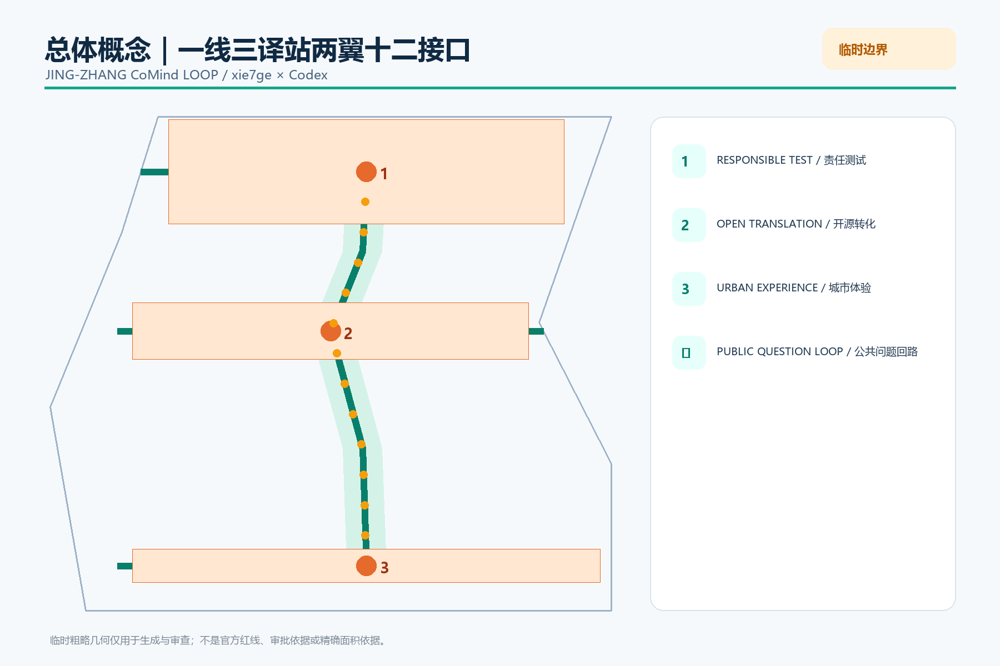
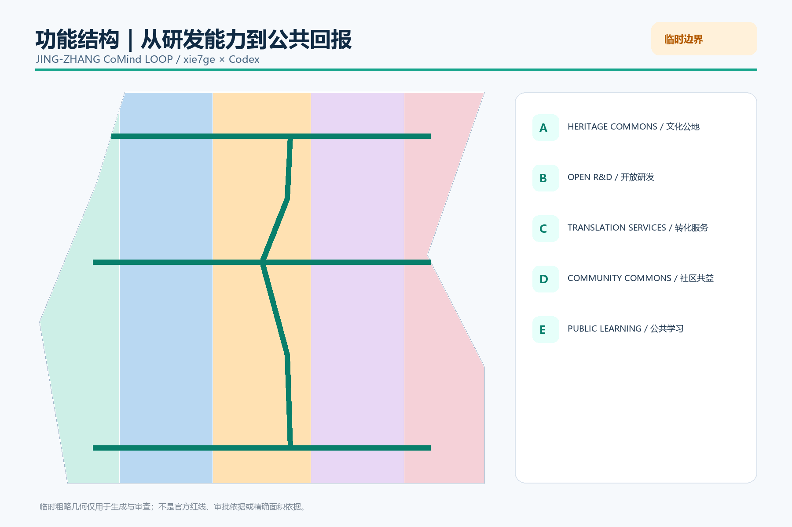

总览地图

三层范围
43.6 km² → 11.4 km² → 368.4 ha
重点区域
① Responsible Test ② Open Translation ③ Urban Experience
用地分区

交通慢行 · 蓝绿公共空间

建筑
Six concept footprints test service combinations. FAR, height, density and final retain/renovate/demolish decisions remain pending official data.
更新项目
8 concept projects: one spine, three stations, three information landmarks, twelve interfaces, project passports and an annual handover.
AI 场景
| # | Interface | Boundary |
|---|---|---|
| 01 | Responsible model testing | Human review · pause · exit |
| 02 | Edge compute booking | Human review · pause · exit |
| 03 | Urban challenge demo | Human review · pause · exit |
| 04 | Open contribution station | Human review · pause · exit |
| 05 | Accessible dual channel | Human review · pause · exit |
| 06 | Mobility gap clinic | Human review · pause · exit |
| 07 | Consent lounge | Human review · pause · exit |
| 08 | Cultural archive guide | Human review · pause · exit |
| 09 | Content co-creation | Human review · pause · exit |
| 10 | AI retail trial | Human review · pause · exit |
| 11 | Human fallback desk | Human review · pause · exit |
| 12 | Annual handover | Human review · pause · exit |
核心指标
任务覆盖
Announcement 1.3–1.5 + Agent tasks 1–6 mapped to narrative, geometry, metrics, drawings, visual and checks.
自检状态
Deterministic · spatial · visual · professional evidence. Provisional warnings remain visible and do not claim official precision.
来源
Official announcement, cleared Agent taskbook, repository source registry, six linked international background references.
假设
Official polygons, controls, ownership, utilities, heritage and engineering files remain prerequisites for statutory or implementation decisions.